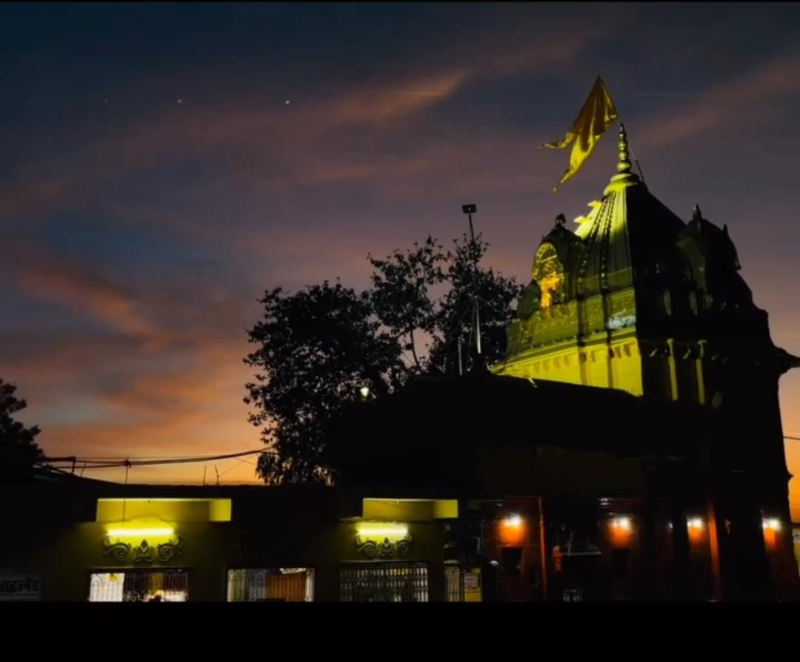
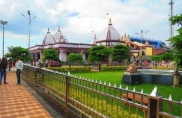
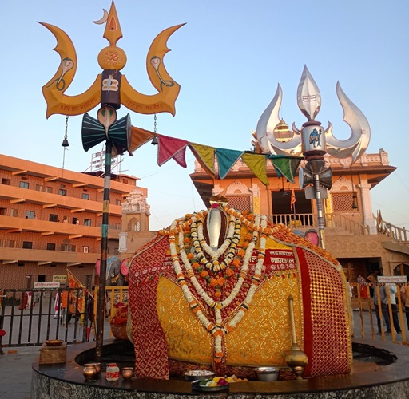

धार्मिक स्थल
सभी देखें
श्री गणेश मंदिर
सीहोर का सबसे प्राचीन और प्रसिद्ध गणेश मंदिर। यहां हर साल गणेश चतुर्थी के अवसर पर भव्य मेले का आयोजन होता है।

सलकनपुर माता मंदिर
समुद्र तल से 600 मीटर की ऊंचाई पर स्थित यह प्राचीन मंदिर मां दुर्गा को समर्पित है। यहां पहाड़ी पर चढ़ाई करके पहुंचा जाता है।
Bhuteshwar मंदिर
प्राकृतिक वातावरण में स्थित यह शिव मंदिर शहर के प्रमुख धार्मिक स्थलों में से एक है। यहां श्रावण मास में विशेष पूजा होती है। Best for Picnic abd family Party
पर्यटन स्थल
सभी देखें
कोलार डैम
सीहोर से 25 किमी दूर स्थित यह डैम प्राकृतिक सौंदर्य के लिए प्रसिद्ध है। मानसून में यहां का नजारा बेहद आकर्षक होता है।

कुबेश्वर धाम
सीहोर से 7 किमी दूर स्थित यह धार्मिक स्थल शिव भक्तों के लिए महत्वपूर्ण है। यहां प्राचीन शिवलिंग स्थापित है।
यात्रा सुझाव और जानकारी
सर्वोत्तम समय
सीहोर घूमने का सबसे अच्छा समय अक्टूबर से मार्च तक है, जब मौसम सुहावना रहता है।
यातायात सुविधा
सभी प्रमुख स्थलों के लिए ऑटो रिक्शा और टैक्सी उपलब्ध हैं। बस स्टैंड से नियमित बस सेवा भी है।
स्थानीय भोजन
सीहोर के प्रसिद्ध भोजन में पोहा-जलेबी, चाट और स्थानीय मिठाइयाँ शामिल हैं।
सीहोर के स्थलों का मैप
सभी प्रमुख पर्यटन स्थलों का स्थान देखें